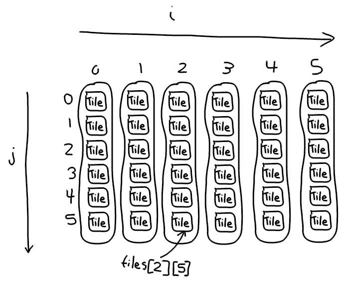

In this step, we want to generate a map to play on.
A map is often stored as a 2D array, which is nothing more than an array where every element is another array. Specifically, our map will be an array of columns and each column will be an array of tiles. You could do it with rows, whatever, same thing.
Make a new class called
Tile
in tile.js.
tile.js
Each tile will have
x
and
y
coordinates, a
sprite
(simply the position in the spritesheet),
and a
passable
flag. For the most basic maps, all you need to know is how to distinguish between walls and floors and
passable
does that for us. You can also see that we're using
drawSprite
like we did for the player.
Let's extend
Tile
to make floors and walls.
tile.js
We have the code for floor and wall tiles, but we need the sprites.
Drawing Map Tiles
The floor uses dark colors and not too much contrast since we don't want it to compete with the foreground sprites. With tiles, keep in mind how they're going to repeat. Pixels on the left of our sprite will appear next to pixels on the right (likewise for bottom and top). An easy technique I'm using here is drawing a bunch of connecting lines and then breaking them up with a few pixels of the background color.
For the wall tile, we'll start with the same background color from the floor tile. This allows us to have rounded walls that blend in seamlessly.
Don't forget to export your file after updating it!
In map.js, we're going to start making the map.
index.html
map.js
This makes a 2D array called
tiles
and populates it with about 30% walls and 70% floors.

So our map is actually there and the way you can confirm this is by going into the dev tools and simply typing "tiles".
But let's draw it. All we need to do is iterate over every tile and call draw on it.
But first, I want to wrap access to the tile array in a function called
getTile
. There are a lot of reasons for doing this. For one it reads a little cleaner, but it also lets us pull off shenanigans like returning tiles outside the bounds of the array and which don't actually exist (which might happen if, for instance, the player casts a giant area of effect spell that extends past the outer dungeon walls).
map.js
Now with that out of the way, we can get to drawing simply by looping over each tile and telling it to draw itself.
game.js
Cool.
We haven't added an outer wall though. Let's modify generateTiles() and reuse the inBounds() function to make one.
map.js
We're not interacting with the tiles though. We start on a wall and we're walking right through them!
To fix that first problem, we're simply going to teleport the player to a random floor tile when the game starts.
How do we find a random floor tile though? One really dumb, easy way to do so is repeatedly grab random tiles until we find a floor tile. This pattern works really well for a variety of map generation techniques: try to do something at random and keep doing it until we get it right. Add a timeout to make sure we don't get stuck in an infinite loop on accident. You don't want to lock up your browser after all.
We'll also need a simple utility function to generate random integers within a given range.
util.js
map.js
Our
tryTo
function needs to be passed a callback that attempts something and returns
true
only if it worked. That's why we're passing an anonymous function that rolls some random coordinates, gets the corresponding tile, and returns true only if the following expression is true:
tile.passable && !tile.monster
(the tile is passable and has no monster).
Notice that nowhere else in our program have we defined
tile.monster
. Thanks to JavaScript's lenient property and type handling, this will work fine. A missing property will have a value of
undefined
and that will get coerced to
false
and we're good.
Let's take
randomPassableTile
out for a spin by teleporting the player to random tile as mentioned earlier.
index.html
Refresh several times and you'll see that the player spawns in random locations, none of which are walls.
Our map is generated and our player is spawned in the correct place. We're almost done.
Banishing disconnected islands (a roguelike developer's greatest enemy)
One more big problem first and this one is a super common headache when procedurally generating the maps. With our extremely dumb way of making the levels, there are often areas of the map not connected to other areas. Disconnected islands. We need a way a check that everything is connected.
This part is a little tricky, so first let's some write some pseudocode:
That's the basic idea. Now let's convert that into real code:
map.js
They key here is
getConnectedTiles
.
Imagine you are drawing a dungeon map on grid paper and you want to color in the floors. How do you do it?
One way is pick a random floor tile on the grid, expand outwards repeatedly, and color connected floor tiles until you're done. You obviously wouldn't draw wall tiles the same color as the floor and you wouldn't recolor floor tiles once you drew them the first time. That's exactly the idea behind the flood fill algorithm and here's more pseudocode for a function that does it:
We'll convert that to JavaScript as well by breaking it down into several smaller functions:
tile.js
OK, that seems like a lot so let's break it down.
getNeighbor
is pretty straightforward. It's a wrapper around
getTile
. Even though it's a simple wrapper,
this method is useful when implementing all sorts of mechanics. Also note that it works for more than just adjacent neighbors.
getAdjacentNeighbors
returns the adjacent neighbors of a tile and shuffles them before returning.
getAdjacentPassableNeighbors
additionally filters out non-passable tiles (e.g. walls).
filter
is a nifty JavaScript array function where we pass in a callback and we return true for only the elements we want to keep.
getConnectedTiles
does exactly what the pseudocode said. It uses
filter
again and also
concat
,
which adds one array to another.
util.js
And finally
shuffle
is an implementation of Fisher-Yates shuffle. All it's doing is a random swap for each element in an array, leading to a perfectly shuffled array.
To reiterate: we keep trying to make levels until we find one that has no disconnected islands. The way we know there are no disconencted islands is when we've made only a single connected "island". If we have one big island of floor tiles, the number of tiles on that island should match the total number of floor tiles on the map. When we're able to satisfy that condition, we're happy with our level and we can stop.
So now let's check our work. Refresh a bunch of times and you'll never see a disconnected island again.
In the next section we'll create our monsters and make sure the player can't walk through walls.